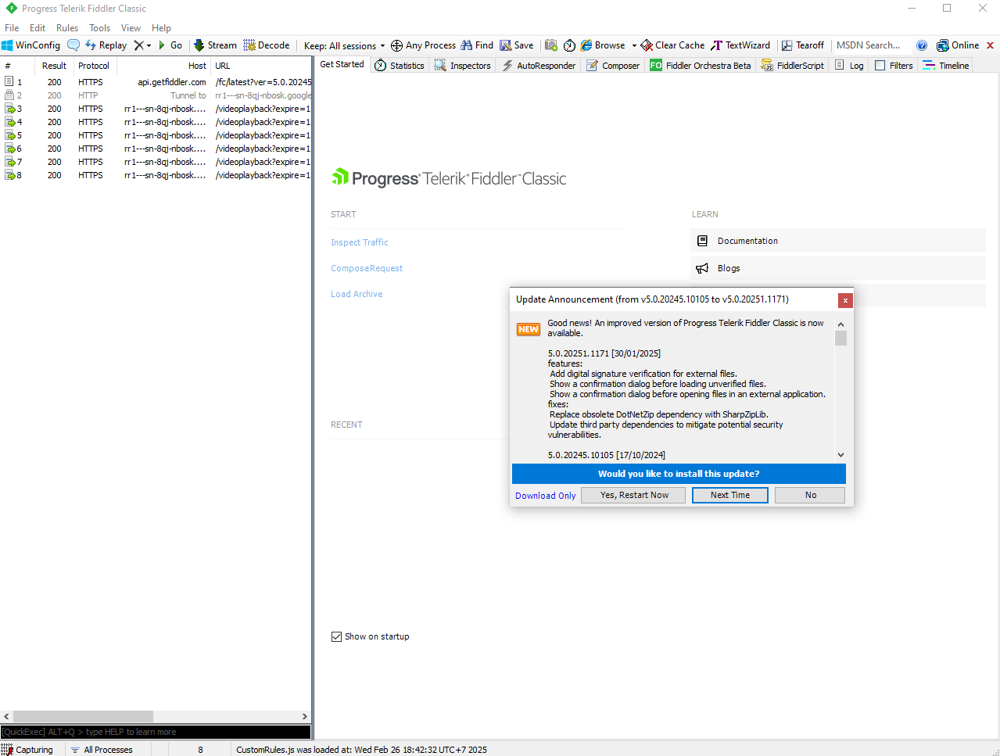
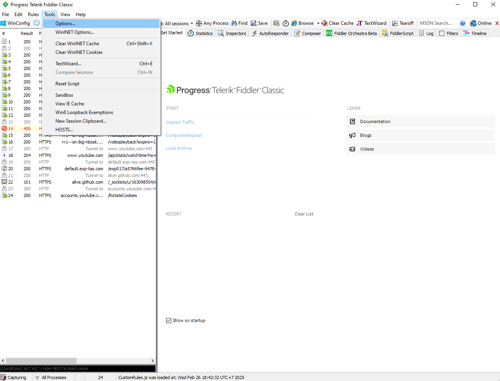
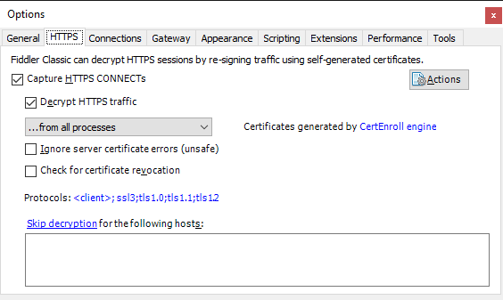
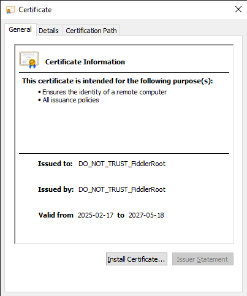
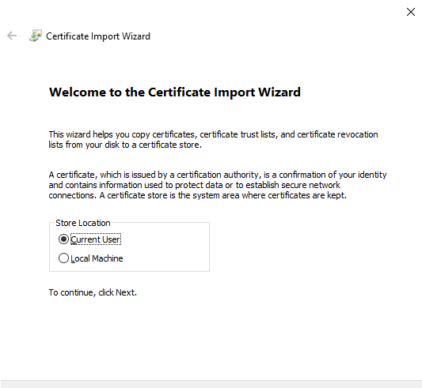
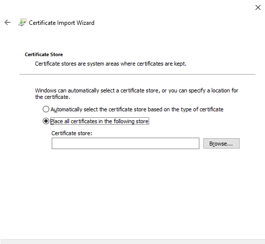
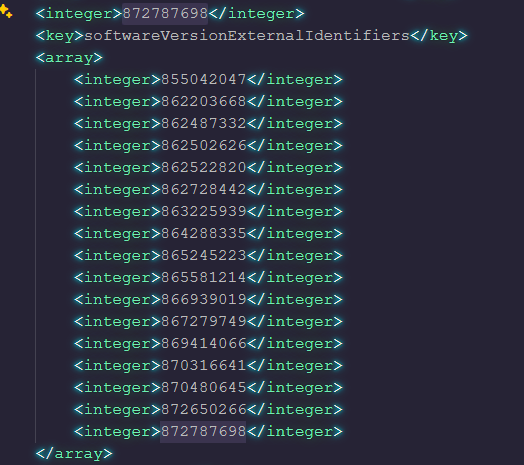
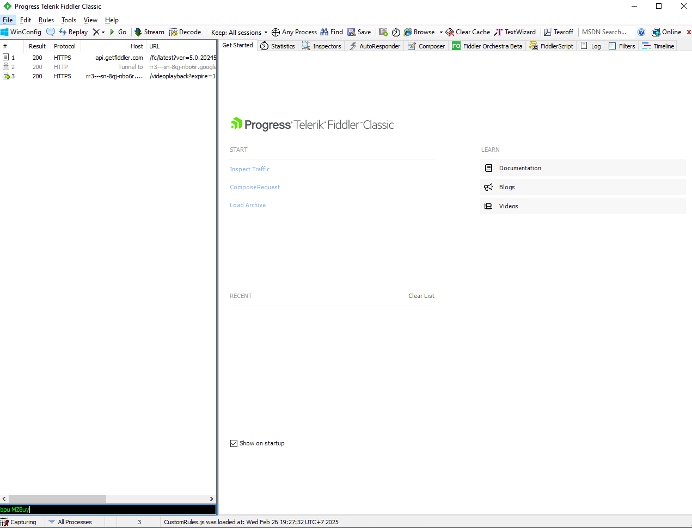

Hướng dẫn hạ cấp ứng dụng iOS
--------------------------------
Điều kiện bắt buộc
- Ứng dụng phải còn tồn tại trên App Store
- Đã tải ứng dụng về Apple ID để có License
- Phải có appVerId (sẽ hướng dẫn ở Bước 03)
- Sử dụng trên Windows
Bước 1. Cài đặt và sử dụng Fiddler Classic
-
Tải về
Fiddler Classic
-
Tải về
iTunes 12.6.5.3
đây là bản cuối cùng hỗ trợ tải tệp ứng dụng
- Công cụ giải nén WinRAR
-
Sau khi tải về Fiddler Classic và iTunes thì bấm cài đặt: Next > Next >
cho đến khi cài đặt hoàn tất
Bước 2. Cài đặt chứng chỉ cho Fiddler Classic
-
Mở Fiddler Classic và Nhấn "No" nếu có hỏi cập nhật và làm theo như ảnh

-
Chọn Tools > Options.. > chọn thẻ HTTPS

-
Nhấp chọn Decrypt HTTPS traffic > Chọn "No" nếu có hộp thoại hiện lên và
nhấp chọn Actions > Export Root Certificate to Desktop

-
Nhấp vào FiddlerRoot.cer trên Desktop để cài đặt và làm theo như hình và
chọn Install Certificate...



-
Chọn Trusted Root Certification Authorities và nhấn OK > Finish > Xong
phần cài đặt Fiddler Classic và Certificate

Bước 3. Lấy appVerId tương ứng với phiên bản của ứng dụng
- Nếu đã có trước appVerId thì sang luôn Bước 4
- Mở iTunes > Đăng nhập > Purchased > nhấp tải ứng dụng cần hạ cấp
-
Ném tệp ipa của ứng dụng ra thư mục bất kỳ ngoài Desktop để giải nén
- Đổi định dạng .ipa thành .zip rồi giải nén
-
Tìm và mở tệp iTunesMetadata.plist bằng Notepad hoặc bất cứ thứ gì có hỗ
trợ
-
Tìm đến đoạn mã như trong ảnh (phiên bản mới nhất là phiên bản nằm phía
dưới)

-
Động não và tư duy tính toán để đối chiếu phiên bản đó tương ứng với
appVerId nào trong mảng trong hình và sao chép dãy số nguyên đó
Bước 4. Tải phiên bản cũ
-
Sau khi đã có được appVerId thì có thể dùng
IPADOWN và làm theo hướng
dẫn trên Website để tải hoặc tiếp tục dùng Fiddler Classic để tải
-
Mở Fiddler Classic lên nhập
bpu MZBuy vào Textbox phía dưới
và Enter để cản Request đi thẳng đến Server trước khi ta nhập vào
appVerId

-
Mở iTunes và tìm đến ứng dụng cần hạ cấp và nhấp tải và nhìn sang
Fiddler Classic nhấp đúp vào biểu tượng màu đỏ p23-buy.itunes.app..

-
Chọn TextView > dán appVerId vào > Run to Completion > iTunes sẽ tự tải
phiên bản ứng dụng tương ứng với appVerId đã dán vào
-
Sao lưu lại tệp ipa đó ở một nơi an toàn hoặc dùng 3uTools để cài luôn
vào thiết bị
Lưu ý
- Tệp ipa tải về là chính chủ theo Apple ID có hiệu lực vĩnh viễn
-
Đối với tệp ipa không có In-app có thể cài trực tiếp thông qua
itms-services
-
Đối với tệp ipa có In-app bắt buộc phải dùng 3uTools hoặc iMazing để cài
thông qua PC để không bị lỗi load In-app
Author
𝔏𝔬𝔫𝔤 𝔗𝔥𝔦𝔫𝔥 |
𝙻𝚞𝚡𝚢𝚍𝚎𝚟